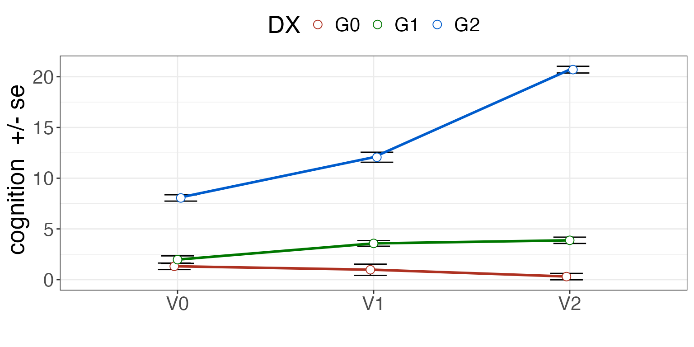
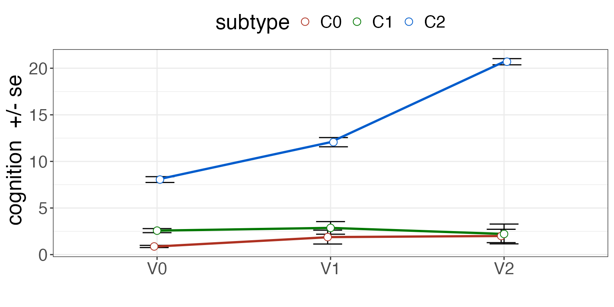
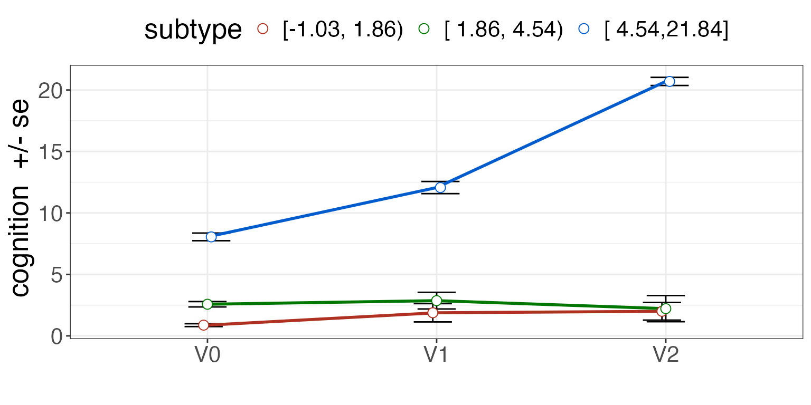

Overview of subtyper
Subtyper is a package for defining subtypes in patient populations based on data. A “subtyping method” uses data to classify subjects into groups that represent different disease etiologies, different progression paths or different sets of symptoms potentially arising from the same underlying pathology. Subtyping therefore tries to identify smaller but distinctive groups within an overall disorder. If the overall condition is dementia, then diagnoses could be considered as subtypes: Alzheimer’s disease, parkinson’s disease or frontotemporal lobar degeneration.
Subtyping methods must be predictive. That is, they follow a machine learning style with a “training” phase for the models followed by inference wherein we apply the fixed models to new data. Subtyper’s design follows this paradigm which will be seen in the examples below. While we only use linear regression here, the basic principles can extend to other modeling techniques including deep learning.
Subtyping and “staging” are or may be inter-related. For example, some sub-types may only be identifiable at a given disease stage. Other subtypes are fundamentally different across all disease stages (e.g. genetic forms of AD or PD vs idiopathic forms). In PD, some patients “jump” between classically defined subtypes (see 2021 Lancet review on PD diagnosis). Ths package does not claim to produce “good” subtypes. It’s just a tool that allows one to test and visualize different approaches to subtyping whether they are stage-specific or not.
Generic processing steps
The brief code block below shows us the core steps in
subtyper. We will comment on each step within its own
section.
library(subtyper)
#> Warning: replacing previous import 'ciTools::add_ci' by 'gtsummary::add_ci'
#> when loading 'subtyper'
#> Warning: replacing previous import 'dplyr::as_data_frame' by
#> 'igraph::as_data_frame' when loading 'subtyper'
#> Warning: replacing previous import 'dplyr::groups' by 'igraph::groups' when
#> loading 'subtyper'
#> Warning: replacing previous import 'dplyr::union' by 'igraph::union' when
#> loading 'subtyper'
#> Warning: replacing previous import 'gtsummary::add_ci' by 'ciTools::add_ci'
#> when loading 'subtyper'
#> Registered S3 methods overwritten by 'fmsb':
#> method from
#> print.roc pROC
#> plot.roc pROC
#> Warning: replacing previous import 'gt::gt' by 'globaltest::gt' when loading
#> 'subtyper'
#> Warning: replacing previous import 'dplyr::rename' by 'plyr::rename' when
#> loading 'subtyper'
mydf = generateSubtyperData( 100 )
rbfnames = names(mydf)[grep("Random",names(mydf))]
mydf = outlierness( mydf, rbfnames )
#> [1] "r update: 2"
#> [1] "r update: 3"
#> [1] "r update: 4"
#> [1] "r update: 5"
#> [1] "r update: 6"
mydf = highestQualityRepeat( mydf, "Id", "visit", "OL_KNN_SUM")
qdf = trainSubtypeUni( mydf, "cognition", c("C0","C1","C2"), c(0.33,0.66) )
pdf = predictSubtypeUni( mydf, qdf, "Id" )Example data
The function:
n = 250 # number of subjects
mydf = generateSubtyperData( n )simply supplies a dataframe that fits our assumptions about how data is organized.
subject IDs are provided
each subject has one or more “visits”
at each visit, there may be more than one repeats of a measurement
there is some measurement of the quality of each measurement (optional)
While our simulated data is complete, in reality, many subjects may be missing data. We can further simulate this (at random) by performing:
Outlierness
It is important to note that these methods are likely to be more
generalizable if they are trained and applied to data that is “good”
quality. While we assume that the data comes with some quality
measurements (domain specific), we may also use data-driven approaches
to measuring how close each timepoint-repeat is to related data. If such
a datapoint is “far away” from its nearest neighbors, then it is likely
to be an outlier. The outlierness function implements
several methods for making such estimations which can guide data
inspection.
rbfnames = names(mydf)[grep("Random",names(mydf))]
mydf = outlierness( mydf, rbfnames )These outlierness measurements are added to the data frame by the above call. The names are prepended with “OL_”. Which particular measurement – or set of measurements – is best may depend on your dataset.
Warning: Some subjects will always be outliers according to these methods. However, that does not mean they should be rejected. Decisions about data rejection should be put off to the last possible moment. Another option is to simply covary for the outlierness score — with the assumption that the score is not or is only marginally related to the outcomes of interest.
Filter for quality
Given the above comments, we might want to find the “best” repeat for
each time point in the case when there are multiple repeats. Here, we
use the OL_KNN_SUM score as an outlierness measurement.
mydf = highestQualityRepeat( mydf, "Id", "visit", "OL_KNN_SUM")Covariate adjustment
The function adjustByCovariates can be used to train and
predict covariate adjusted scores. Here, we train the adjustment based
on group G0 and adjust with respect to
RandomBasisProjection01. In practice, these variables may
include age, sex and other nuisance variables.
myform = "cognition ~ RandomBasisProjection01 "
mydf = adjustByCovariates(mydf,myform,"DX","G0")
# produces a variable called cognition_adjustedTrain the subtyping model
We employ a three group model as it matches our known (simulated) diagnostic groups. Otherwise, we could use a four group model here in order to demonstrate the difference from the known three group diagnosis.
# four group model
qdf4 = trainSubtypeUni( mydf, "cognition_adjusted", c("C0","C1","C2","C3"), c(0.25,0.5, 0.75) )
# three group model
qdf = trainSubtypeUni( mydf, "cognition_adjusted", c("C0","C1","C2"), c( 0.33, 0.66 ) )
knitr::kable( qdf, caption="Subtyping training result.")| subtype | measurement | quantiles | quantileValues | group |
|---|---|---|---|---|
| C0 | cognition_adjusted | 0.00 | -Inf | NA |
| C1 | cognition_adjusted | 0.33 | 1.862423 | NA |
| C2 | cognition_adjusted | 0.66 | 4.538340 | NA |
Perform inference with the subtyping model
We define the subtype from the baseline data. This means that we assume that the data at baseline is sufficient to confidently identify which grouping to which the subject should belong.
pdf = predictSubtypeUni( mydf, qdf, "Id", "visit", "V0" )Check subtypes against diagnosis
Data-driven subtypes should overlap — in our simulated data example — with diagnosis.
| G0 | G1 | G2 | |
|---|---|---|---|
| C0 | 13 | 8 | 0 |
| C1 | 5 | 11 | 0 |
| C2 | 0 | 0 | 18 |
Visualize the results
See the difference with diagnosis.
summ = plotSubtypeChange( mydf, "Id", "cognition", "DX", "visit", whiskervar='se' )
print( summ )
See the difference with subtype.
summ = plotSubtypeChange( pdf, "Id", "cognition", "subtype", "visit", whiskervar='se' )
print( summ )
Plot the subtypes with cutpoints displayed.
pdf = predictSubtypeUni( mydf, qdf, "Id", "visit", "V0", rename=FALSE )
summ = plotSubtypeChange( pdf, "Id", "cognition", "subtype", "visit", whiskervar='se' )
print( summ )
Visualization of the subtype definition against various outcomes is key to establishing validity.
consensus clustering example
Generate some data, as above. Define the feature columns and the clustering methods to test.
library(subtyper)
library( coca )
data <- list()
data[[1]] <- as.matrix(read.csv(system.file("extdata",
"dataset1.csv", package = "coca"), row.names = 1))
data[[2]] <- as.matrix(read.csv(system.file("extdata",
"dataset2.csv", package = "coca"), row.names = 1))
data[[3]] <- as.matrix(read.csv(system.file("extdata",
"dataset3.csv", package = "coca"), row.names = 1))
bounded = data.frame( cbind( data[[1]], data[[2]], data[[3]] ) )
colnames( bounded )=paste0("XDAT",1:ncol(bounded))
### generate data
mydf = generateSubtyperData( nrow(bounded) )
mydf$Id = 1:nrow(mydf)
mydf$visit=rep("V0",nrow(mydf))
mydf$repeater=rep("V0",nrow(mydf))
mydf = cbind( mydf, bounded )
clustlist = c(
"clust.cmeans", "flexcorr", "flexcanb", "flexmink", "GMM", "pamCluster",
"kmedians", "angle", "ejaccard", "hardcl", "cckmeans" )
fnames = getNamesFromDataframe( "XDAT", mydf )
# induce some clustering structureNext, we use subtyper methods to generate clustering solutions. We train from the baseline visit.
mvcl='MVST' # default prefix - can be changed
cohortbl = mydf[ mydf$visit == 'V0', ]
mydf = consensusSubtypingPrep( cohortbl, mydf, fnames,
clustlist, maxK=6,
fnames[1], mvcl=mvcl, verbose=FALSE )Given the full output, run a consensus method.
# some hidden function cannot be found if we dont explicitly load caret
library( caret )
#> Loading required package: ggplot2
#> Warning: package 'ggplot2' was built under R version 4.3.1
#> Loading required package: lattice
#> Warning: package 'lattice' was built under R version 4.3.1
ccname = paste0(mvcl,"_CC")
cocanames = getNamesFromDataframe( paste0(mvcl,"_cstk"), mydf, exclusions='_mem')
maxK = 6
myoh = clustdata = consensusSubtypingCOCA( mydf, maxK=maxK,
cocanames=cocanames,
newclustername=ccname,
idvar='Id', visitName='visit',
baselineVisit='V0',
binnmf=2,
returnonehot=TRUE )
#>
#> MVST_cstk_2_cckmeans1 MVST_cstk_2_cckmeans2
#> 75 50
#>
#> MVST_cstk_2_hardcl1 MVST_cstk_2_hardcl2
#> 51 74
#>
#> MVST_cstk_3_flexcanb1 MVST_cstk_3_flexcanb2 MVST_cstk_3_flexcanb3
#> 25 50 50
#>
#> MVST_cstk_3_GMM1 MVST_cstk_3_GMM2 MVST_cstk_3_GMM3
#> 50 25 50
#>
#> MVST_cstk_4_hardcl1 MVST_cstk_4_hardcl2 MVST_cstk_4_hardcl3 MVST_cstk_4_hardcl4
#> 25 25 26 49
#>
#> MVST_cstk_4_cckmeans1 MVST_cstk_4_cckmeans2 MVST_cstk_4_cckmeans3
#> 50 13 13
#> MVST_cstk_4_cckmeans4
#> 49
#>
#> MVST_cstk_5_kmedians1 MVST_cstk_5_kmedians2 MVST_cstk_5_kmedians3
#> 25 25 25
#> MVST_cstk_5_kmedians4 MVST_cstk_5_kmedians5
#> 25 25
#>
#> MVST_cstk_5_cckmeans1 MVST_cstk_5_cckmeans2 MVST_cstk_5_cckmeans3
#> 50 14 11
#> MVST_cstk_5_cckmeans4 MVST_cstk_5_cckmeans5
#> 25 25
#>
#> MVST_cstk_6_flexmink1 MVST_cstk_6_flexmink2 MVST_cstk_6_flexmink3
#> 25 10 15
#> MVST_cstk_6_flexmink4 MVST_cstk_6_flexmink5 MVST_cstk_6_flexmink6
#> 25 25 25
#>
#> MVST_cstk_6_pamCluster1 MVST_cstk_6_pamCluster2 MVST_cstk_6_pamCluster3
#> 25 25 13
#> MVST_cstk_6_pamCluster4 MVST_cstk_6_pamCluster5 MVST_cstk_6_pamCluster6
#> 12 25 25
#> [1] "nmfbin done"
pheatmap::pheatmap( myoh )
clustdata = consensusSubtypingCOCA( mydf, maxK=maxK,
cocanames=cocanames,
newclustername=ccname,
idvar='Id', visitName='visit', baselineVisit='V0',
binnmf=2,
verbose=TRUE )
#>
#> MVST_cstk_2_cckmeans1 MVST_cstk_2_cckmeans2
#> 75 50
#>
#> MVST_cstk_2_hardcl1 MVST_cstk_2_hardcl2
#> 51 74
#>
#> MVST_cstk_3_flexcanb1 MVST_cstk_3_flexcanb2 MVST_cstk_3_flexcanb3
#> 25 50 50
#>
#> MVST_cstk_3_GMM1 MVST_cstk_3_GMM2 MVST_cstk_3_GMM3
#> 50 25 50
#>
#> MVST_cstk_4_hardcl1 MVST_cstk_4_hardcl2 MVST_cstk_4_hardcl3 MVST_cstk_4_hardcl4
#> 25 25 26 49
#>
#> MVST_cstk_4_cckmeans1 MVST_cstk_4_cckmeans2 MVST_cstk_4_cckmeans3
#> 50 13 13
#> MVST_cstk_4_cckmeans4
#> 49
#>
#> MVST_cstk_5_kmedians1 MVST_cstk_5_kmedians2 MVST_cstk_5_kmedians3
#> 25 25 25
#> MVST_cstk_5_kmedians4 MVST_cstk_5_kmedians5
#> 25 25
#>
#> MVST_cstk_5_cckmeans1 MVST_cstk_5_cckmeans2 MVST_cstk_5_cckmeans3
#> 50 14 11
#> MVST_cstk_5_cckmeans4 MVST_cstk_5_cckmeans5
#> 25 25
#>
#> MVST_cstk_6_flexmink1 MVST_cstk_6_flexmink2 MVST_cstk_6_flexmink3
#> 25 10 15
#> MVST_cstk_6_flexmink4 MVST_cstk_6_flexmink5 MVST_cstk_6_flexmink6
#> 25 25 25
#>
#> MVST_cstk_6_pamCluster1 MVST_cstk_6_pamCluster2 MVST_cstk_6_pamCluster3
#> 25 25 13
#> MVST_cstk_6_pamCluster4 MVST_cstk_6_pamCluster5 MVST_cstk_6_pamCluster6
#> 12 25 25
#> [1] "nmfbin done"
#> kmeans spearman 6
#> COCA complete
#> cocatxlab
#> 1 2 3
#> 25 75 25Compare the new clustering to the originals.
for ( k in 1:length(cocanames)) {
print( paste( cocanames[k],
mclust::adjustedRandIndex(clustdata[,cocanames[k]], clustdata[,ccname]) ))
}
#> [1] "MVST_cstk_2_cckmeans 0.196891191709845"
#> [1] "MVST_cstk_2_hardcl 0.190078736237752"
#> [1] "MVST_cstk_3_flexcanb 0.497297297297297"
#> [1] "MVST_cstk_3_GMM 0.162162162162162"
#> [1] "MVST_cstk_4_hardcl 0.321466172398234"
#> [1] "MVST_cstk_4_cckmeans 0.117933358292774"
#> [1] "MVST_cstk_5_kmedians 0.474576271186441"
#> [1] "MVST_cstk_5_cckmeans 0.268734056831009"
#> [1] "MVST_cstk_6_flexmink 0.429447852760736"
#> [1] "MVST_cstk_6_pamCluster 0.427632476068399"
table( clustdata[,cocanames[1]], clustdata[,ccname])
#>
#> MVST_CC1 MVST_CC2 MVST_CC3
#> MVST_cstk_2_cckmeans1 25 50 0
#> MVST_cstk_2_cckmeans2 0 25 25
table( clustdata[,cocanames[2]], clustdata[,ccname])
#>
#> MVST_CC1 MVST_CC2 MVST_CC3
#> MVST_cstk_2_hardcl1 25 26 0
#> MVST_cstk_2_hardcl2 0 49 25There you have it.